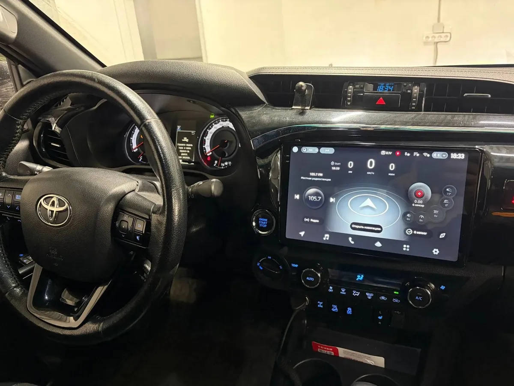

TEYES Sibir
18 нояб. 2026 г.

Toyota Hilux 2019 года – поставили мультимедиа Teyes CC4, камеру заднего вида, видеорегистратор и микрофон.
Что сделали в установочном центре TEYES Sibir:
– установили Teyes CC4 на место штатного экрана, в ту же центральную панель;
– поставили камеру заднего вида в накладку ручки заднего борта, картинка с линиями разметки идёт на экран Teyes;
– установили видеорегистратор и микрофон громкой связи в штатное место.
Блок климата под экраном и кнопка Start Stop остались на своих местах. На экране теперь Android: навигация, радио, музыка и громкая связь.
Подбираем Teyes под конкретную машину по фото панели и году выпуска. Приезжайте на Сухарную, 35 к13 в Новосибирске или смотрите Teyes для Hilux по кнопке.